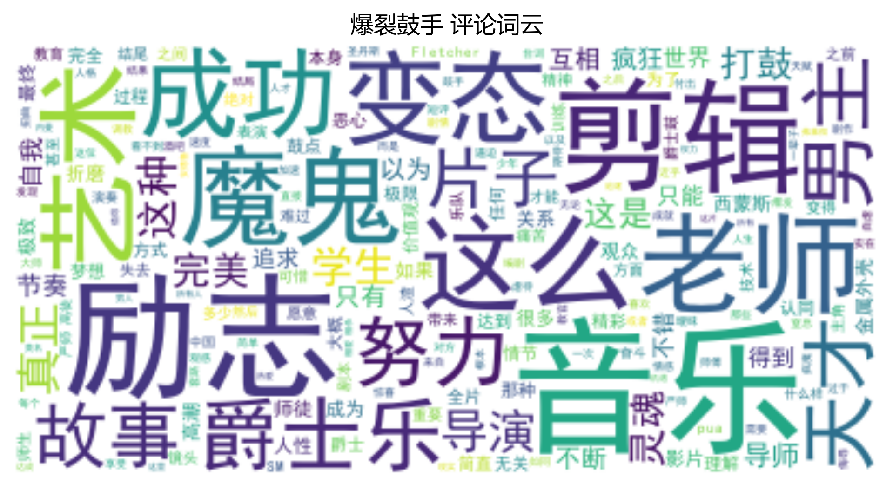
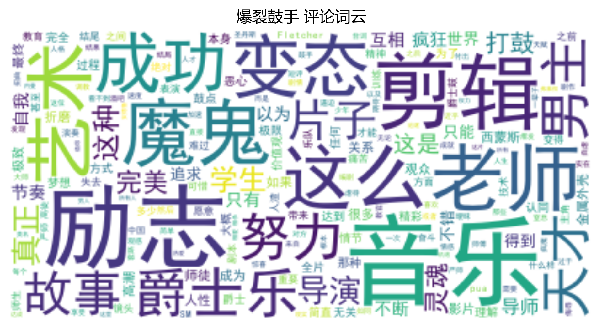
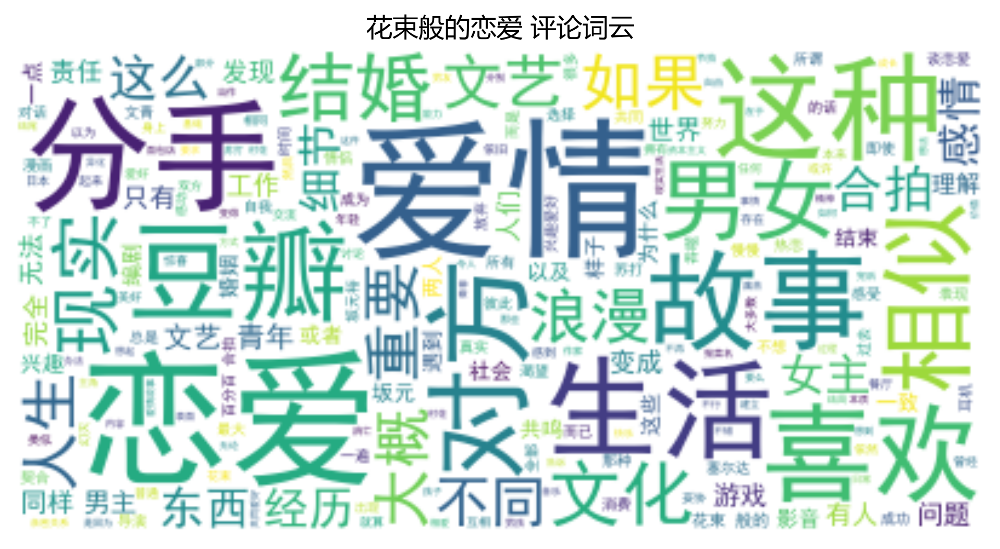
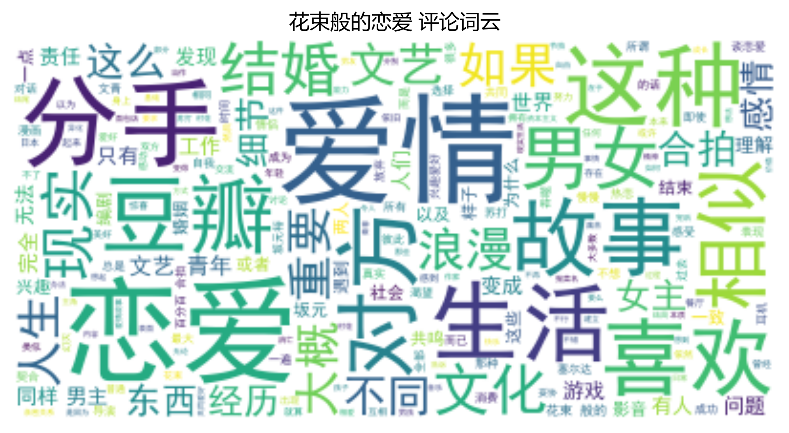
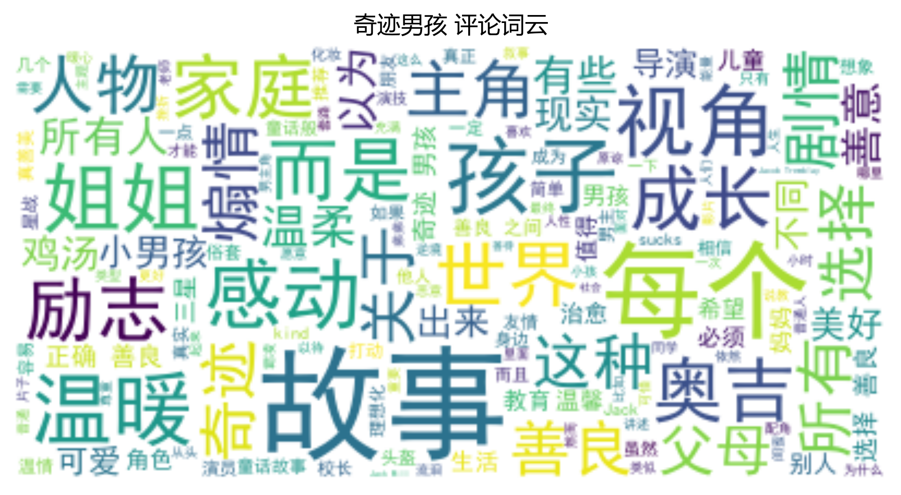
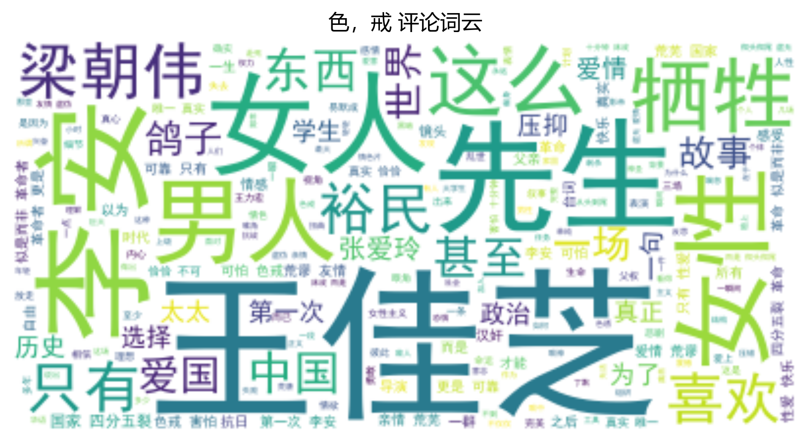
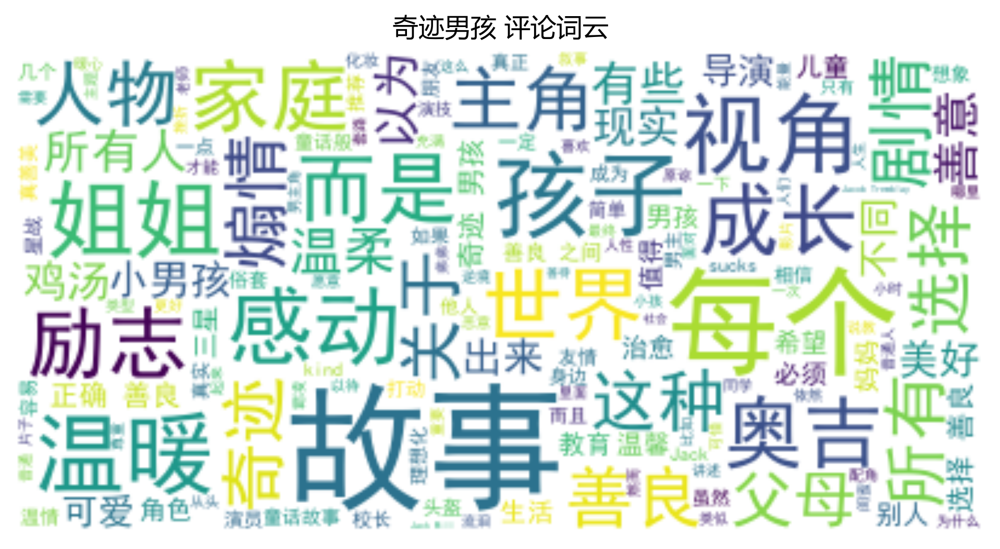
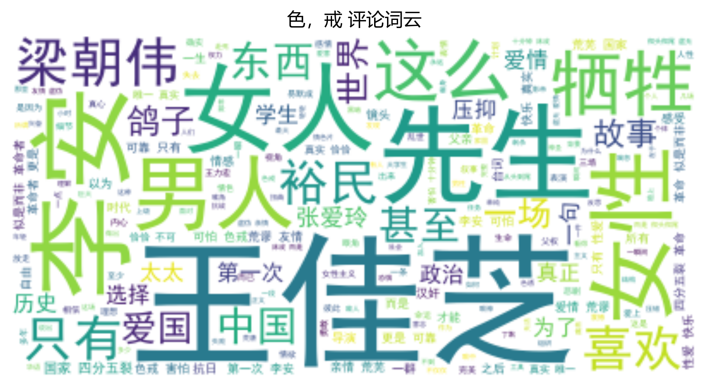
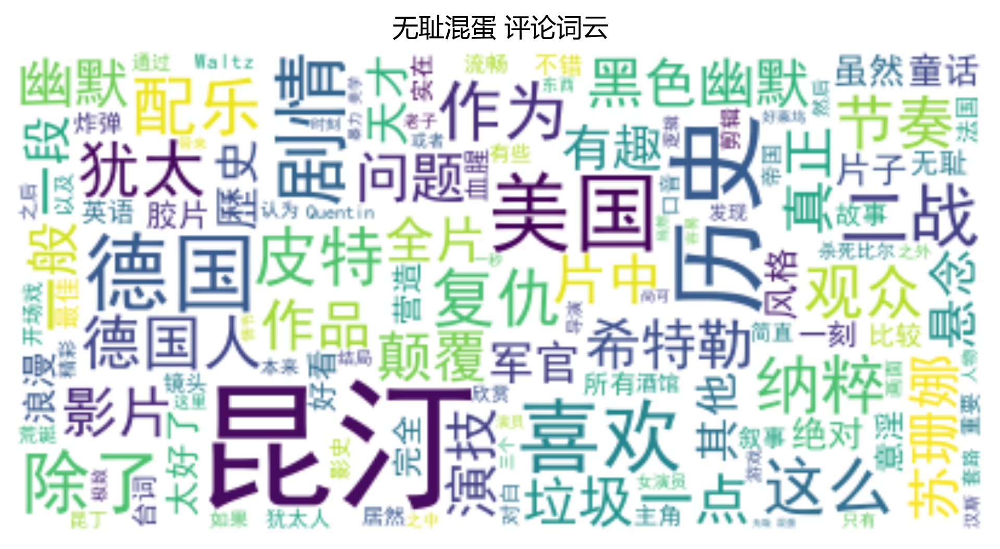
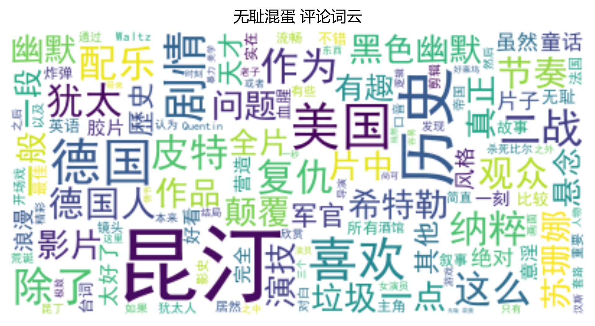

数据分析


类型频率统计
加载中...
| 类型 | 出现次数 |
|---|
展开表格
在光影的长河中，250部佳作如星辰般闪耀，跨越87载时光(1936-2023)，承载着不同文化的叙事密码。
豆瓣电影Top250分析报告
基本统计:
- 电影总数: 147
- 平均评分: 9.06
- 平均评价人数: 1,024,265
- 时间跨度: 1936 至 2023
热门国家:
美国 70部 | 日本 17部 | 中国香港 11部
热门类型:
剧情 115次 | 爱情 37次 | 喜剧 33次
| 类型 | 出现次数 |
|---|


 



_wordcloud.png)

 


 



 



本部分基于豆瓣Top250电影的评论数据，进行了深入的文本分析和情感挖掘。
主要发现包括：
详细分析内容将在后续更新中呈现...
数据来源：豆瓣电影 © 2025